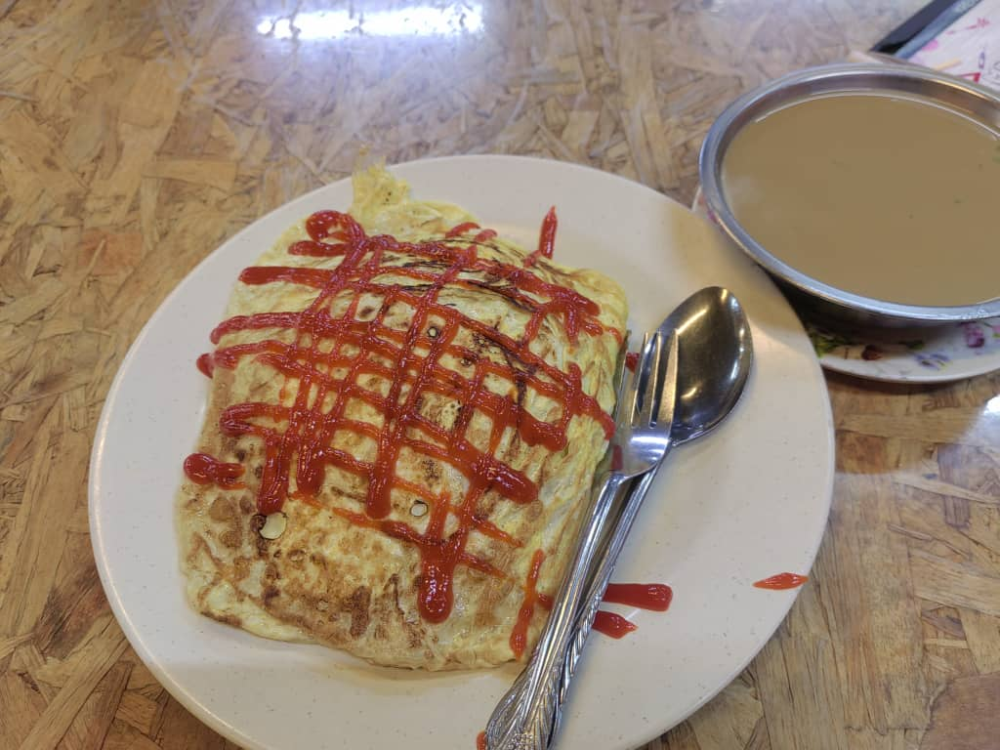
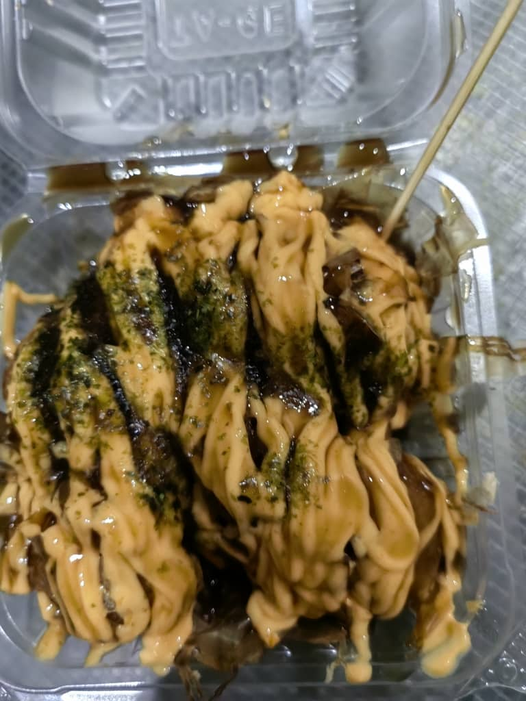
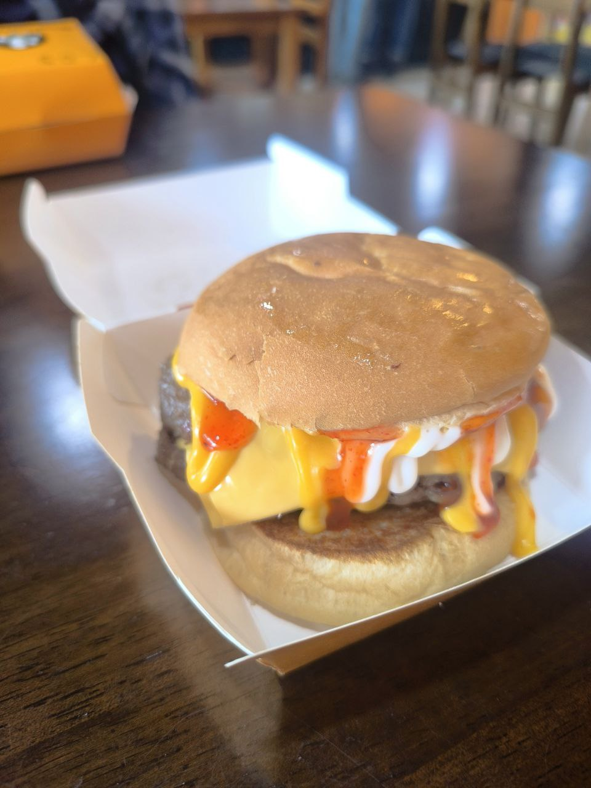
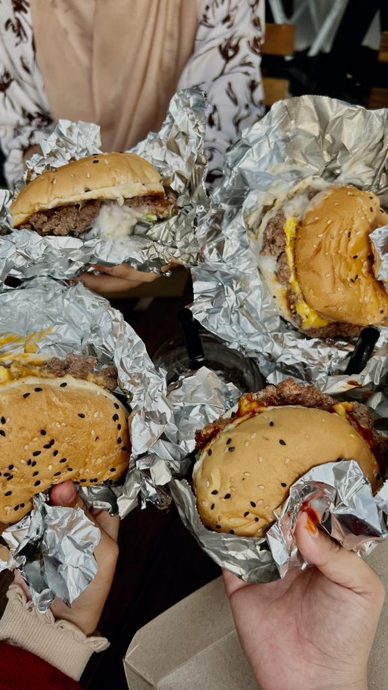
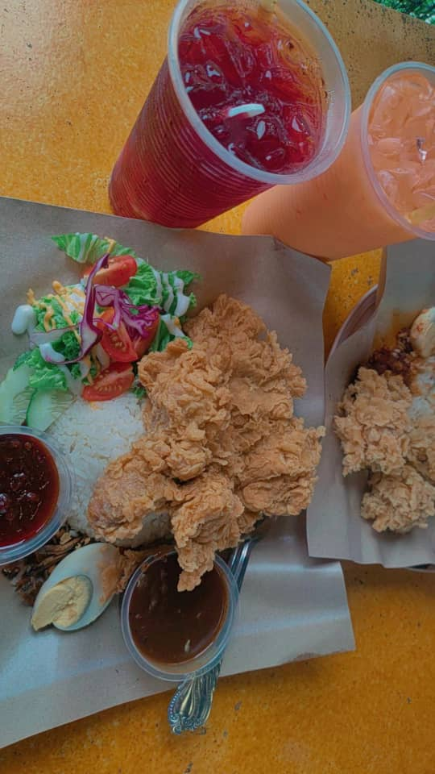
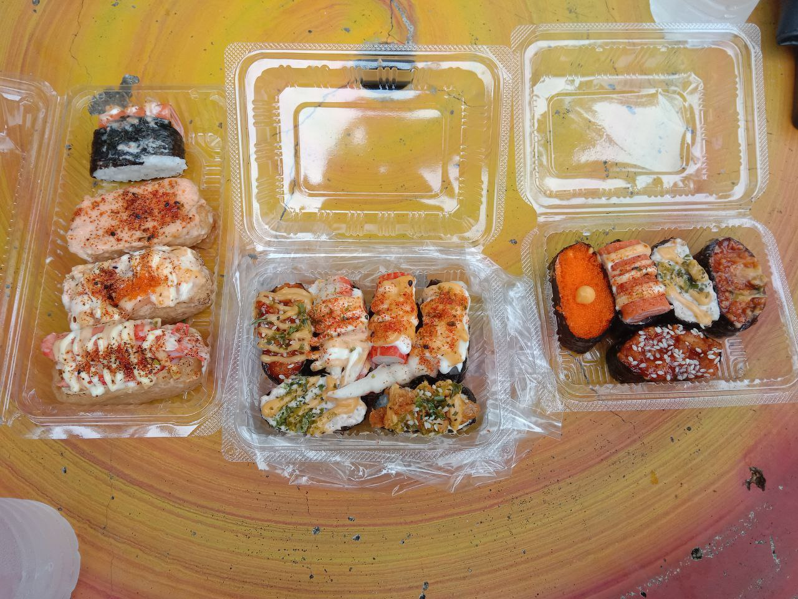
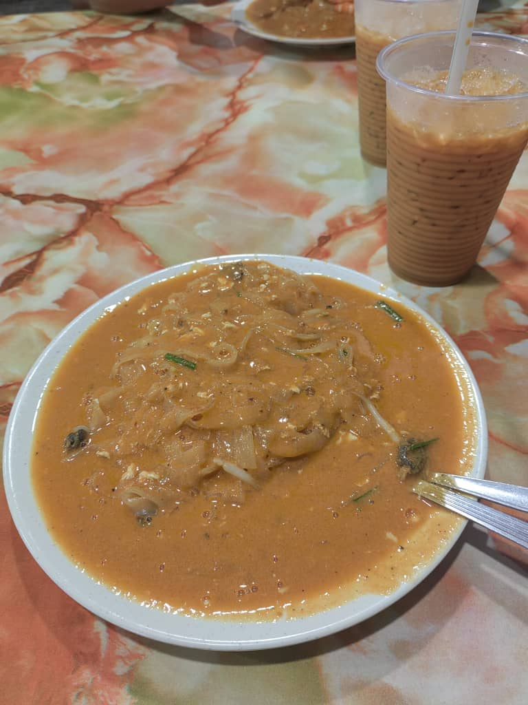

Hiii :)
My Fav Foods
| Food |
Description |
| Nasi Goreng Pattaya |
With a mouth-watering fried rice covered in a layer of egg, this Pattaya Fried Rice is set to become my new favorite dish. Nasi Goreng Pattaya is a Malaysian dish, made by wrapping chicken fried rice in an omelette bag. This unique dish includes fried rice with chicken tomato sauce, wrapped in a soft omelette. |
| Takoyaki |
Takoyaki is one of the best street foods in Japan. Crispy on the outside and creamy on the inside, these squid balls are made from batter, boiled squid, green onions and pieces of tempura. |
| Burger |
High-quality beef cooked medium to well, with cheese and bacon on a multigrain bread. "A huge single or triple burger with all the fixings, cheese, lettuce, tomato, onions, and special sauce or mayonnaise!" |
| Nasi Lemak Chicken Chop |
Nasi Lemak Chicken Chop: flawlessly prepared nasi lemak topped with double-fried chicken chops smeared with spicy Sambal.
Crunchy ikan bilis, kacang, cucumber, and a sunny-side-up egg are served on fragrant rice. |
| Sushi |
Sushi is a traditional Japanese rice meal made with vinegar and garnished with vegetables, eggs, or raw seafood. It is served chilled. |
| Char Kue Tiau |
Char Kuey Teow is a dish made of flat rice noodles that are cooked in 5 minutes with a variety of sauces, fish, and vegetables. |

Nasi Goreng Pattaya
Actually, Pattaya fried rice is amazing for many reasons. It is perfect for any meal throughout the day. A piece of omelette with every piece of rice really makes it perfect. It is also known as Pattaya Fried Rice. Every day I wish I could eat this dish for the rest of my life!

Takoyaki
The Takoyaki tasted so good. Fluffy and soft, they were practically melting inside my mouth.


Burger
say cheese(burgers)! I work out because i love burgers

Nasi Lemak Chicken Chop
Nasi lemak, like Malaysians, is a colorful blend of numerous components that combine to form a massive, tasty mouthful.

Sushi
If you are reading this, Bring me sushi

char kue tiau
Char Kuey Teow is best described as having flavorful, contrasting textures with an air of smokiness.
|